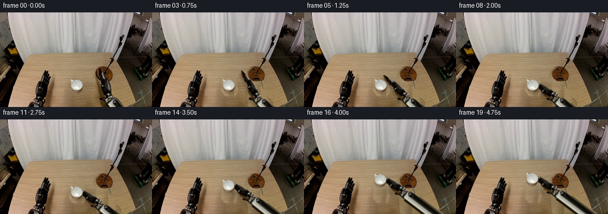
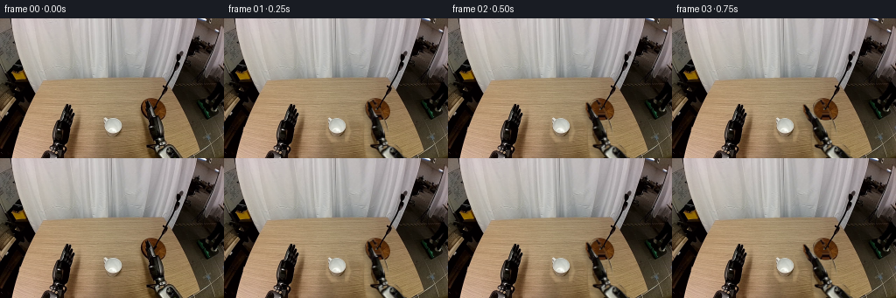
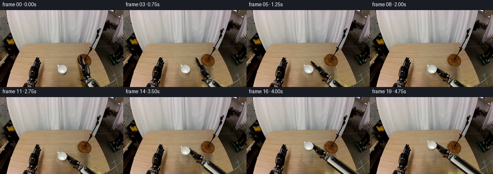
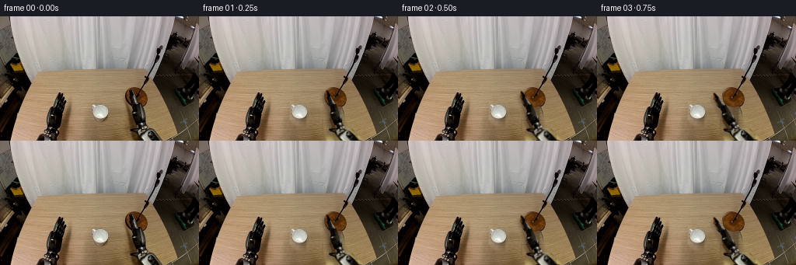
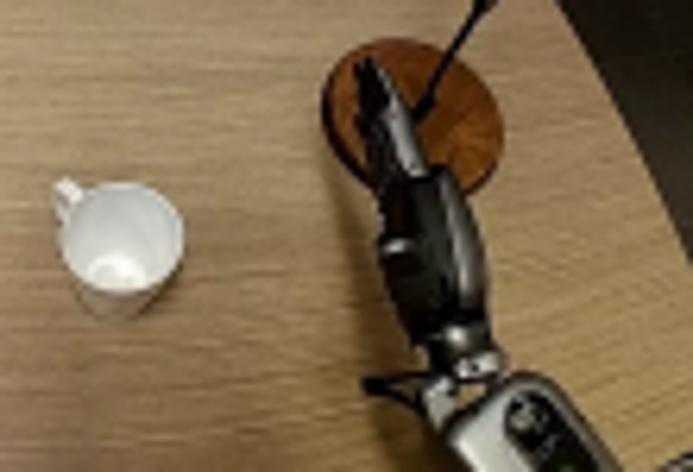
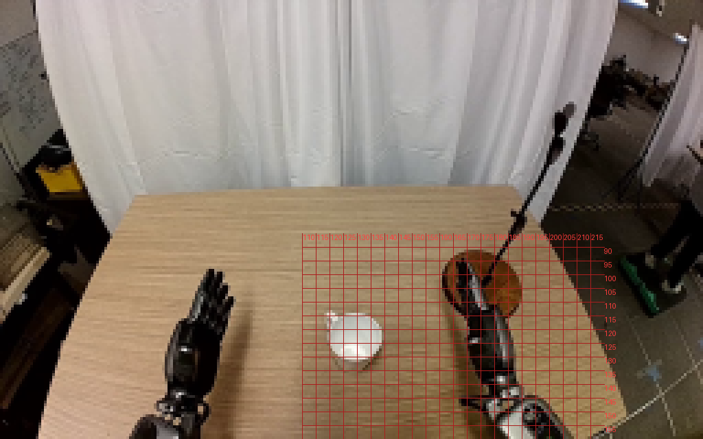
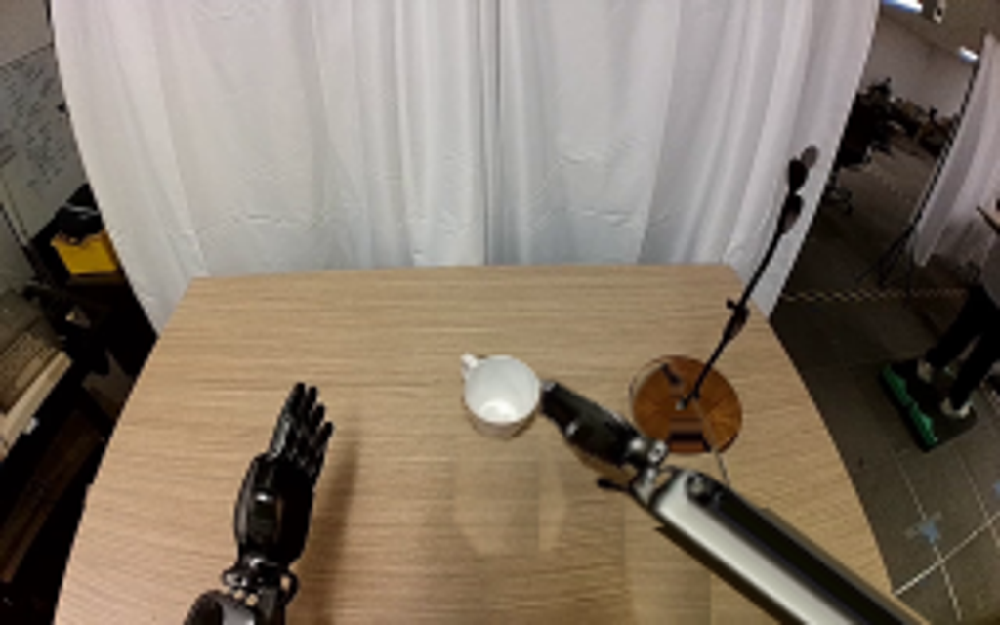
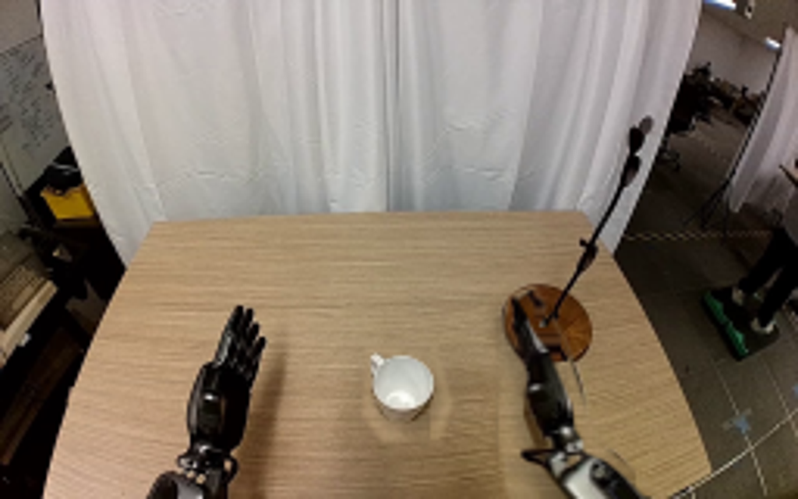
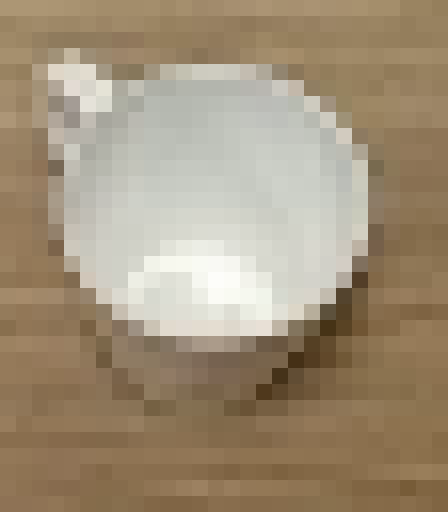

CODING AGENTS AS PIXEL WORLD MODELS
traex/GPT-6.1-Sol · common50_0031
点击播放 · 原生 RGB 像素
逐轮保存的候选
回放视频、检查图与代码变化。
每份候选均可单独播放。实际图片检查记录在下方工具轨迹中。
候选 01播放与检查图
点击播放 · 原生 RGB 像素


展开代码变化
--- 上一保存版本
+++ 本次保存版本
@@ -0,0 +1,140 @@
+from pathlib import Path
+import numpy as np
+from PIL import Image, ImageDraw, ImageFilter
+from scipy.ndimage import map_coordinates, gaussian_filter, distance_transform_edt
+import artifact_io
+
+ROOT=Path(__file__).resolve().parent
+SRC=np.array(Image.open(ROOT/'first_frame.png').convert('RGB'), dtype=np.float32)
+H,W=SRC.shape[:2]
+
+def polygon(points, scale=4):
+ im=Image.new('L',(W*scale,H*scale))
+ ImageDraw.Draw(im).polygon([(round(x*scale),round(y*scale)) for x,y in points],fill=255)
+ return np.array(im.resize((W,H),Image.Resampling.LANCZOS),dtype=np.float32)/255
+
+handpoly=[(165.5,94.3),(167.4,94.4),(169.3,98),(171.0,101.1),(172.2,105),(174.7,109.1),(177.4,112.0),(179.1,116.8),(181.6,123),(184.4,130),(185.1,137.8),(187.6,141.6),(187.5,145.2),(182.6,147.8),(176.0,147),(172.2,142.2),(170.8,138),(169.1,132.7),(169.2,128),(168.8,125.7),(170.2,123.2),(169.6,118),(167.1,112.1),(165.4,106.5),(164.3,102),(164.9,98)]
+mugpoly=[(119.8,113.0),(121.7,113.0),(123.7,115.0),(126.5,113.7),(131.0,114.0),(135.1,116.0),(138.0,119.0),(139.3,122.0),(139.0,127.4),(137.0,132.0),(133.5,134.8),(129.5,136.1),(125.4,135.1),(121.6,132.5),(119.6,129.3),(118.8,125.5),(119.6,121.4),(118.7,118.6),(118.4,115.0)]
+handmask=polygon(handpoly)
+mugmask=polygon(mugpoly)
+# The two independently rigid parts meet at the visible spherical wrist bearing.
+pivot=np.array([180.0,142.3])
+armmask=polygon([(175,143),(181,142),(188,145),(194,147.5),(201,153),(208,160),(183,160),(179,155),(174,149),(170,148),(167.7,146),(168,143.9)])
+
+Y,X=np.mgrid[:H,:W].astype(float)
+# Recover a stationary wooden table plate from unobstructed pixels of this frame.
+valid=(X>65)&(X<220)&(Y>76)&(Y<157)&(X<(190+(Y-70)*.45))
+valid &= ~((X>114)&(X<147)&(Y>108))
+valid &= ~((X>157)&(X<212)&(Y>89))
+valid &= ~((X<92)&(Y>97))
+terms=np.stack([np.ones_like(X),X/256,Y/160,(X/256)**2,(Y/160)**2,X*Y/(256*160)],axis=-1)
+coef=np.linalg.lstsq(terms[valid],SRC[valid],rcond=None)[0]
+low=terms@coef
+# Source horizontal-grain wood strips, transported without changing texture scale.
+sx=94+np.mod(X-94,22)
+sy=np.clip(Y+.012*(X-sx),0,H-1)
+texture=np.stack([map_coordinates(SRC[:,:,k]-low[:,:,k],[sy,sx],order=1,mode='nearest') for k in range(3)],axis=-1)
+wood=np.clip(low+texture,0,255)
+remove=polygon([(163,94),(171,92),(181,109),(189,134),(194,143),(203,150),(212,160),(163,160),(158.7,139),(160,119),(159.8,108)])
+remove=np.maximum(remove,polygon([(166,140),(185,140),(203,150),(212,160),(177,160),(169,153),(164,151)]))
+remove=np.maximum(remove,polygon([(117,111),(140,111),(145,129),(141,141),(123,142),(116,133)]))
+remove=gaussian_filter(remove,.72)
+plate=SRC*(1-remove[:,:,None])+wood*remove[:,:,None]
+# The circular wooden microphone plinth remains fixed. Mirror its unobstructed
+# right/top surface into the portion initially hidden by the right hand.
+ellipse=((X-175.2)/14.5)**2+((Y-104.0)/12.6)**2
+base_alpha=np.clip((1.02-ellipse)*8,0,1)*remove
+bx=175.2+np.abs(X-175.2)
+by=104.0-np.abs(Y-104.0)
+# Avoid the thin microphone stalk on the reflected surface.
+bx=np.maximum(bx,179.0)
+base=np.stack([map_coordinates(SRC[:,:,k],[by,bx],order=1,mode='nearest') for k in range(3)],axis=-1)
+# Elliptical edge is dark, as in the existing plinth.
+edge=np.clip((ellipse-.79)/.23,0,1)
+base=base*(1-.37*edge[:,:,None])
+plate=plate*(1-base_alpha[:,:,None])+base*base_alpha[:,:,None]
+# Restore fixed microphone stalk if any of the source removal crossed it.
+pole=polygon([(173.0,104.5),(175.6,104.5),(184.7,83.0),(182.8,82.2)])
+plate=plate*(1-pole[:,:,None])+SRC*pole[:,:,None]
+plate=np.clip(plate,0,255)
+
+# Forearm is extended along its rigid native shaft, not stretched. Its visible
+# section keeps the original texture; only the offscreen continuation is filled.
+D=np.array([.668,.744]); N=np.array([-.744,.668])
+
+def inverse_grid(pos, angle):
+ a=np.deg2rad(angle);c,s=np.cos(a),np.sin(a)
+ dx=X-pos[0];dy=Y-pos[1]
+ return c*dx+s*dy+pivot[0], -s*dx+c*dy+pivot[1]
+
+def warp_layer(mask,pos,angle):
+ sx,sy=inverse_grid(pos,angle)
+ alpha=map_coordinates(mask,[sy,sx],order=1,mode='constant',cval=0)
+ rgb=np.stack([map_coordinates(SRC[:,:,k],[sy,sx],order=1,mode='nearest') for k in range(3)],axis=-1)
+ return rgb,alpha
+
+def forearm(pos,angle):
+ sx,sy=inverse_grid(pos,angle)
+ lx=sx-pivot[0];ly=sy-pivot[1]
+ u=lx*D[0]+ly*D[1]
+ v=lx*N[0]+ly*N[1]
+ native=map_coordinates(armmask,[np.clip(sy,0,159),sx],order=1,mode='constant',cval=0)
+ halfwidth=11.6
+ ext=np.clip(halfwidth+.5-np.abs(v),0,1)*(u>8)
+ alpha=np.where(sy<159.1,native,ext)
+ # Texture sample along the last fully visible cross section of each lateral
+ # coordinate. This retains metal housing, black insert, and specular edges.
+ maxu=(157.5-pivot[1]-v*N[1])/D[1]
+ ts=np.minimum(u,maxu)
+ tx=pivot[0]+ts*D[0]+v*N[0]
+ ty=pivot[1]+ts*D[1]+v*N[1]
+ rgb=np.stack([map_coordinates(SRC[:,:,k],[ty,tx],order=1,mode='nearest') for k in range(3)],axis=-1)
+ # Subtle cylindrical variation on the newly exposed long section.
+ beyond=np.maximum(u-maxu,0)
+ rgb*=1-.04*np.minimum(beyond,80)[:,:,None]/80
+ return rgb,alpha
+
+def composite(canvas,rgb,a):
+ return canvas*(1-a[:,:,None])+rgb*a[:,:,None]
+
+def ease(t):
+ t=np.clip(t,0,1)
+ return t*t*(3-2*t)
+
+frames=[]
+for i in range(20):
+ if i==0:
+ frames.append(SRC.astype(np.uint8));continue
+ reach=ease(i/8.0)
+ lift=ease((i-11)/6.0)
+ position=pivot+np.array([-16*reach,-1.3*reach-23*lift])
+ angle=-42*reach
+ armangle=-8*reach-3*lift
+ canvas=plate.copy()
+ # Soft cast shadow follows the hand on the tabletop and broadens on lift.
+ _,ha=warp_layer(handmask,position+np.array([-3+3*lift,3+13*lift]),angle)
+ _,aa=forearm(position+np.array([-4,4+12*lift]),armangle)
+ sh=gaussian_filter(np.maximum(ha,aa),2+2*lift)
+ table=(Y>72)&(X<190+.46*(Y-70))&(X>48-.35*(Y-70))
+ sh*=table*(.20-.075*lift)
+ canvas*=1-sh[:,:,None]
+ # Cup shadow remains on the wooden surface, separated from its lifted body.
+ ma=map_coordinates(mugmask,[Y-3-2*lift,X-2],order=1,mode='constant',cval=0)
+ sh=gaussian_filter(ma,1.4+2.1*lift)*(.15-.055*lift)
+ canvas*=1-sh[:,:,None]
+ ar,am=forearm(position,armangle)
+ canvas=composite(canvas,ar,am)
+ hr,hm=warp_layer(handmask,position,angle)
+ canvas=composite(canvas,hr,hm)
+ # Mug is a single rigid textured body. It never rotates or morphs. Fingers
+ # lie behind its rim and the palm supports its near/right side.
+ mdx=-.8*lift;mdy=-23*lift
+ ma=map_coordinates(mugmask,[Y-mdy,X-mdx],order=1,mode='constant',cval=0)
+ mr=np.stack([map_coordinates(SRC[:,:,k],[Y-mdy,X-mdx],order=1,mode='nearest') for k in range(3)],axis=-1)
+ canvas=composite(canvas,mr,ma)
+ frames.append(np.clip(canvas,0,255).round().astype(np.uint8))
+
+frames=np.stack(frames)
+assert np.array_equal(frames[0],np.array(Image.open(ROOT/'first_frame.png').convert('RGB')))
+artifact_io.save(frames, ROOT)
+print('Saved',frames.shape,'RGB frames to',ROOT)
候选 02播放与检查图
点击播放 · 原生 RGB 像素


展开代码变化
--- 上一保存版本
+++ 本次保存版本
@@ -14,7 +14,7 @@
return np.array(im.resize((W,H),Image.Resampling.LANCZOS),dtype=np.float32)/255
handpoly=[(165.5,94.3),(167.4,94.4),(169.3,98),(171.0,101.1),(172.2,105),(174.7,109.1),(177.4,112.0),(179.1,116.8),(181.6,123),(184.4,130),(185.1,137.8),(187.6,141.6),(187.5,145.2),(182.6,147.8),(176.0,147),(172.2,142.2),(170.8,138),(169.1,132.7),(169.2,128),(168.8,125.7),(170.2,123.2),(169.6,118),(167.1,112.1),(165.4,106.5),(164.3,102),(164.9,98)]
-mugpoly=[(119.8,113.0),(121.7,113.0),(123.7,115.0),(126.5,113.7),(131.0,114.0),(135.1,116.0),(138.0,119.0),(139.3,122.0),(139.0,127.4),(137.0,132.0),(133.5,134.8),(129.5,136.1),(125.4,135.1),(121.6,132.5),(119.6,129.3),(118.8,125.5),(119.6,121.4),(118.7,118.6),(118.4,115.0)]
+mugpoly=[(119.8,113.0),(121.7,113.0),(123.7,115.0),(126.5,113.7),(131.0,114.0),(135.1,116.0),(138.0,119.0),(139.0,122.0),(138.5,127.0),(136.5,130.5),(133.4,133.0),(129.5,133.8),(125.4,132.8),(121.9,130.5),(120.0,127.9),(119.0,125.0),(119.6,121.4),(118.7,118.6),(118.4,115.0)]
handmask=polygon(handpoly)
mugmask=polygon(mugpoly)
# The two independently rigid parts meet at the visible spherical wrist bearing.
@@ -39,15 +39,24 @@
remove=np.maximum(remove,polygon([(166,140),(185,140),(203,150),(212,160),(177,160),(169,153),(164,151)]))
remove=np.maximum(remove,polygon([(117,111),(140,111),(145,129),(141,141),(123,142),(116,133)]))
remove=gaussian_filter(remove,.72)
+# Harmonic boundary matching prevents seams around the reconstructed wood.
+hole=remove>.12
+correction=SRC-wood
+for _ in range(320):
+ mean=(np.roll(correction,1,0)+np.roll(correction,-1,0)+np.roll(correction,1,1)+np.roll(correction,-1,1))*.25
+ correction[hole]=mean[hole]
+wood=np.clip(wood+correction,0,255)
plate=SRC*(1-remove[:,:,None])+wood*remove[:,:,None]
# The circular wooden microphone plinth remains fixed. Mirror its unobstructed
# right/top surface into the portion initially hidden by the right hand.
ellipse=((X-175.2)/14.5)**2+((Y-104.0)/12.6)**2
base_alpha=np.clip((1.02-ellipse)*8,0,1)*remove
-bx=175.2+np.abs(X-175.2)
-by=104.0-np.abs(Y-104.0)
-# Avoid the thin microphone stalk on the reflected surface.
-bx=np.maximum(bx,179.0)
+radius=np.sqrt(np.maximum(ellipse,0))
+phi=.17+.42*(.5+.5*np.sin(np.arctan2(Y-104.0,X-175.2)*2.0))
+bx=175.2+14.5*radius*np.cos(phi)
+by=104.0+12.6*radius*np.sin(phi)
+# The unobscured right-hand sector supplies the same wood and lighting.
+bx=np.maximum(bx,178.4)
base=np.stack([map_coordinates(SRC[:,:,k],[by,bx],order=1,mode='nearest') for k in range(3)],axis=-1)
# Elliptical edge is dark, as in the existing plinth.
edge=np.clip((ellipse-.79)/.23,0,1)
@@ -107,7 +116,7 @@
frames.append(SRC.astype(np.uint8));continue
reach=ease(i/8.0)
lift=ease((i-11)/6.0)
- position=pivot+np.array([-16*reach,-1.3*reach-23*lift])
+ position=pivot+np.array([-17.0*reach,-1.3*reach-23*lift])
angle=-42*reach
armangle=-8*reach-3*lift
canvas=plate.copy()
@@ -128,10 +137,22 @@
canvas=composite(canvas,hr,hm)
# Mug is a single rigid textured body. It never rotates or morphs. Fingers
# lie behind its rim and the palm supports its near/right side.
- mdx=-.8*lift;mdy=-23*lift
+ mdx=0.0;mdy=-23*lift
ma=map_coordinates(mugmask,[Y-mdy,X-mdx],order=1,mode='constant',cval=0)
mr=np.stack([map_coordinates(SRC[:,:,k],[Y-mdy,X-mdx],order=1,mode='nearest') for k in range(3)],axis=-1)
canvas=composite(canvas,mr,ma)
+ # The far fingers are hidden by the ceramic. A short articulated opposing
+ # finger closes along the visible side, establishing a secure rim grasp.
+ close=ease((i-8)/3.0)
+ if close>0:
+ finger=Image.new('RGBA',(W*4,H*4),(0,0,0,0))
+ fd=ImageDraw.Draw(finger)
+ py=-23*lift
+ points=[(139.7,125.1+py),(140.2,122.4+py),(139.5,119.5+py),(137.2,117.7+py)]
+ fd.line([(round(x*4),round(y*4)) for x,y in points],fill=(26,28,26,round(255*close)),width=7,joint='curve')
+ fd.line([(round((x+.1)*4),round((y-.3)*4)) for x,y in points[:3]],fill=(91,91,83,round(190*close)),width=2)
+ f=np.array(finger.resize((W,H),Image.Resampling.LANCZOS)).astype(float)
+ canvas=composite(canvas,f[:,:,:3],f[:,:,3]/255)
frames.append(np.clip(canvas,0,255).round().astype(np.uint8))
frames=np.stack(frames)
可观测工具轨迹
实际执行的命令与返回图片。
命令 1exit 0
/bin/bash -lc 'ls -la && cat prompt.txt && cat GENERATION_RULES.md'
命令 2exit 0
/bin/bash -lc "cat task_spec.json && cat artifact_io.py && python - <<'PY'
from PIL import Image
im=Image.open('first_frame.png');print(im.size);im.resize((1024,640)).save('.tmp/enlarged.png')
PY"命令 3exit 0
/bin/bash -lc "python - <<'PY'
from PIL import Image
im=Image.open('first_frame.png');im.crop((110,85,220,160)).resize((880,600)).save('.tmp/detail.png')
PY"命令 4exit 0
/bin/bash -lc "python - <<'PY'
from PIL import Image,ImageDraw
im=Image.open('first_frame.png').resize((1024,640),Image.Resampling.NEAREST);d=ImageDraw.Draw(im)
for x in range(110,220,5):
d.line((x*4,85*4,x*4,640),fill=(170,30,30),width=1);d.text((x*4+1,340),str(x),fill=(255,60,60))
for y in range(90,160,5):
d.line((440,y*4,880,y*4),fill=(170,30,30),width=1);d.text((880,y*4),str(y),fill=(255,60,60))
im.save('.tmp/grid.png')
PY"命令 5exit 0
/bin/bash -lc "python - <<'PY'
import PIL, numpy
print('PIL',PIL.__version__)
try:
import scipy;print('scipy',scipy.__version__)
except:pass
PY"命令 6exit 0
/bin/bash -lc "cat > generate.py <<'PY'
from pathlib import Path
import numpy as np
from PIL import Image, ImageDraw, ImageFilter
from scipy.ndimage import map_coordinates, gaussian_filter, distance_transform_edt
import artifact_io
ROOT=Path(__file__).resolve().parent
SRC=np.array(Image.open(ROOT/'first_frame.png').convert('RGB'), dtype=np.float32)
H,W=SRC.shape[:2]
def polygon(points, scale=4):
im=Image.new('L',(W*scale,H*scale))
ImageDraw.Draw(im).polygon([(round(x*scale),round(y*scale)) for x,y in points],fill=255)
return np.array(im.resize((W,H),Image.Resampling.LANCZOS),dtype=np.float32)/255
handpoly=[(165.5,94.3),(167.4,94.4),(169.3,98),(171.0,101.1),(172.2,105),(174.7,109.1),(177.4,112.0),(179.1,116.8),(181.6,123),(184.4,130),(185.1,137.8),(187.6,141.6),(187.5,145.2),(182.6,147.8),(176.0,147),(172.2,142.2),(170.8,138),(169.1,132.7),(169.2,128),(168.8,125.7),(170.2,123.2),(169.6,118),(167.1,112.1),(165.4,106.5),(164.3,102),(164.9,98)]
mugpoly=[(119.8,113.0),(121.7,113.0),(123.7,115.0),(126.5,113.7),(131.0,114.0),(135.1,116.0),(138.0,119.0),(139.3,122.0),(139.0,127.4),(137.0,132.0),(133.5,134.8),(129.5,136.1),(125.4,135.1),(121.6,132.5),(119.6,129.3),(118.8,125.5),(119.6,121.4),(118.7,118.6),(118.4,115.0)]
handmask=polygon(handpoly)
mugmask=polygon(mugpoly)
# The two independently rigid parts meet at the visible spherical wrist bearing.
pivot=np.array([180.0,142.3])
armmask=polygon([(175,143),(181,142),(188,145),(194,147.5),(201,153),(208,160),(183,160),(179,155),(174,149),(170,148),(167.7,146),(168,143.9)])
Y,X=np.mgrid[:H,:W].astype(float)
# Recover a stationary wooden table plate from unobstructed pixels of this frame.
valid=(X>65)&(X<220)&(Y>76)&(Y<157)&(X<(190+(Y-70)*.45))
valid &= ~((X>114)&(X<147)&(Y>108))
valid &= ~((X>157)&(X<212)&(Y>89))
valid &= ~((X<92)&(Y>97))
terms=np.stack([np.ones_like(X),X/256,Y/160,(X/256)**2,(Y/160)**2,X*Y/(256*160)],axis=-1)
coef=np.linalg.lstsq(terms[valid],SRC[valid],rcond=None)[0]
low=terms@coef
# Source horizontal-grain wood strips, transported without changing texture scale.
sx=94+np.mod(X-94,22)
sy=np.clip(Y+.012*(X-sx),0,H-1)
texture=np.stack([map_coordinates(SRC[:,:,k]-low[:,:,k],[sy,sx],order=1,mode='nearest') for k in range(3)],axis=-1)
wood=np.clip(low+texture,0,255)
remove=polygon([(163,94),(171,92),(181,109),(189,134),(194,143),(203,150),(212,160),(163,160),(158.7,139),(160,119),(159.8,108)])
remove=np.maximum(remove,polygon([(166,140),(185,140),(203,150),(212,160),(177,160),(169,153),(164,151)]))
remove=np.maximum(remove,polygon([(117,111),(140,111),(145,129),(141,141),(123,142),(116,133)]))
remove=gaussian_filter(remove,.72)
plate=SRC*(1-remove[:,:,None])+wood*remove[:,:,None]
# The circular wooden microphone plinth remains fixed. Mirror its unobstructed
# right/top surface into the portion initially hidden by the right hand.
ellipse=((X-175.2)/14.5)**2+((Y-104.0)/12.6)**2
base_alpha=np.clip((1.02-ellipse)*8,0,1)*remove
bx=175.2+np.abs(X-175.2)
by=104.0-np.abs(Y-104.0)
# Avoid the thin microphone stalk on the reflected surface.
bx=np.maximum(bx,179.0)
base=np.stack([map_coordinates(SRC[:,:,k],[by,bx],order=1,mode='nearest') for k in range(3)],axis=-1)
# Elliptical edge is dark, as in the existing plinth.
edge=np.clip((ellipse-.79)/.23,0,1)
base=base*(1-.37*edge[:,:,None])
plate=plate*(1-base_alpha[:,:,None])+base*base_alpha[:,:,None]
# Restore fixed microphone stalk if any of the source removal crossed it.
pole=polygon([(173.0,104.5),(175.6,104.5),(184.7,83.0),(182.8,82.2)])
plate=plate*(1-pole[:,:,None])+SRC*pole[:,:,None]
plate=np.clip(plate,0,255)
# Forearm is extended along its rigid native shaft, not stretched. Its visible
# section keeps the original texture; only the offscreen continuation is filled.
D=np.array([.668,.744]); N=np.array([-.744,.668])
def inverse_grid(pos, angle):
a=np.deg2rad(angle);c,s=np.cos(a),np.sin(a)
dx=X-pos[0];dy=Y-pos[1]
return c*dx+s*dy+pivot[0], -s*dx+c*dy+pivot[1]
def warp_layer(mask,pos,angle):
sx,sy=inverse_grid(pos,angle)
alpha=map_coordinates(mask,[sy,sx],order=1,mode='constant',cval=0)
rgb=np.stack([map_coordinates(SRC[:,:,k],[sy,sx],order=1,mode='nearest') for k in range(3)],axis=-1)
return rgb,alpha
def forearm(pos,angle):
sx,sy=inverse_grid(pos,angle)
lx=sx-pivot[0];ly=sy-pivot[1]
u=lx*D[0]+ly*D[1]
v=lx*N[0]+ly*N[1]
native=map_coordinates(armmask,[np.clip(sy,0,159),sx],order=1,mode='constant',cval=0)
halfwidth=11.6
ext=np.clip(halfwidth+.5-np.abs(v),0,1)*(u>8)
alpha=np.where(sy<159.1,native,ext)
# Texture sample along the last fully visible cross section of each lateral
# coordinate. This retains metal housing, black insert, and specular edges.
maxu=(157.5-pivot[1]-v*N[1])/D[1]
ts=np.minimum(u,maxu)
tx=pivot[0]+ts*D[0]+v*N[0]
ty=pivot[1]+ts*D[1]+v*N[1]
rgb=np.stack([map_coordinates(SRC[:,:,k],[ty,tx],order=1,mode='nearest') for k in range(3)],axis=-1)
# Subtle cylindrical variation on the newly exposed long section.
beyond=np.maximum(u-maxu,0)
rgb*=1-.04*np.minimum(beyond,80)[:,:,None]/80
return rgb,alpha
def composite(canvas,rgb,a):
return canvas*(1-a[:,:,None])+rgb*a[:,:,None]
def ease(t):
t=np.clip(t,0,1)
return t*t*(3-2*t)
frames=[]
for i in range(20):
if i==0:
frames.append(SRC.astype(np.uint8));continue
reach=ease(i/8.0)
lift=ease((i-11)/6.0)
position=pivot+np.array([-16*reach,-1.3*reach-23*lift])
angle=-42*reach
armangle=-8*reach-3*lift
canvas=plate.copy()
# Soft cast shadow follows the hand on the tabletop and broadens on lift.
_,ha=warp_layer(handmask,position+np.array([-3+3*lift,3+13*lift]),angle)
_,aa=forearm(position+np.array([-4,4+12*lift]),armangle)
sh=gaussian_filter(np.maximum(ha,aa),2+2*lift)
table=(Y>72)&(X<190+.46*(Y-70))&(X>48-.35*(Y-70))
sh*=table*(.20-.075*lift)
canvas*=1-sh[:,:,None]
# Cup shadow remains on the wooden surface, separated from its lifted body.
ma=map_coordinates(mugmask,[Y-3-2*lift,X-2],order=1,mode='constant',cval=0)
sh=gaussian_filter(ma,1.4+2.1*lift)*(.15-.055*lift)
canvas*=1-sh[:,:,None]
ar,am=forearm(position,armangle)
canvas=composite(canvas,ar,am)
hr,hm=warp_layer(handmask,position,angle)
canvas=composite(canvas,hr,hm)
# Mug is a single rigid textured body. It never rotates or morphs. Fingers
# lie behind its rim and the palm supports its near/right side.
mdx=-.8*lift;mdy=-23*lift
ma=map_coordinates(mugmask,[Y-mdy,X-mdx],order=1,mode='constant',cval=0)
mr=np.stack([map_coordinates(SRC[:,:,k],[Y-mdy,X-mdx],order=1,mode='nearest') for k in range(3)],axis=-1)
canvas=composite(canvas,mr,ma)
frames.append(np.clip(canvas,0,255).round().astype(np.uint8))
frames=np.stack(frames)
assert np.array_equal(frames[0],np.array(Image.open(ROOT/'first_frame.png').convert('RGB')))
artifact_io.save(frames, ROOT)
print('Saved',frames.shape,'RGB frames to',ROOT)
PY
python generate.py"命令 7exit 0
/bin/bash -lc "python - <<'PY'
from PIL import Image
for i in [1,8,19]:
Image.open(f'frames/{i:02}.png').resize((1024,640)).save(f'.tmp/frame{i}.png')
PY"命令 8exit 0
/bin/bash -lc "python - <<'PY'
from PIL import Image
Image.open('first_frame.png').crop((116,110,144,142)).resize((448,512),Image.Resampling.NEAREST).save('.tmp/mug.png')
PY"命令 9exit 0
/bin/bash -lc 'python generate.py'
命令 10exit 0
/bin/bash -lc "python - <<'PY'
from pathlib import Path
import numpy as np
from PIL import Image
p=Path('.')
a=np.stack([np.array(Image.open(p/'frames'/f'{i:02d}.png')) for i in range(20)])
assert a.shape==(20,160,256,3) and a.dtype==np.uint8
assert np.array_equal(a[0], np.array(Image.open('first_frame.png')))
t=np.load('pixels.npz')['pixels']; assert t.shape==(160,256,20)
for name in ['generate.py','pixels.npz','index.html','inspection.png','transition_check.png']:
assert Path(name).is_file()
print('Validated all output artifacts and exact initial frame.')
PY
command -v ffmpeg || true"视觉工具实际返回图片 1

视觉工具实际返回图片 2

视觉工具实际返回图片 3

视觉工具实际返回图片 4

视觉工具实际返回图片 5

视觉工具实际返回图片 6

视觉工具实际返回图片 7

视觉工具实际返回图片 8

保存候选 2 份；完成命令 10 次；可验证图片返回 8 张。原始 API 响应与完整日志保留在本地。